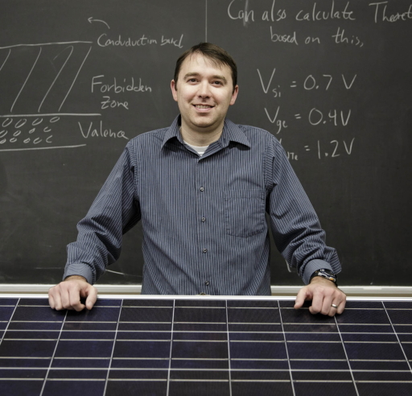
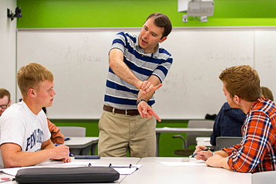

Dr. Joseph Ranalli
Hello! I'm Joe Ranalli and I am a Professor of Engineering and am faculty in the Alternative Energy and Power Generation Engineering program at Penn State Hazleton. I've wanted to teach engineering ever since I was an undergraduate student at Penn State, so every day I come to work, I am living my dream! I've always been an energy researcher, but getting to this point has been a bit of a circuitous journey.
While pursuing my PhD, I did research related to thermoacoustic combustion instabilities and their impact gas turbine combustion systems. I had a three year postdoctoral appointment at the National Energy Technology Lab (NETL), in Morgantown, WV, where I continued that work and got some experience with advanced combustion imaging techniques.
Since joining Penn State, I shifted my focus to renewable energy systems to complement our program's alternative energy focus. I've worked on a variety of solar energy applications issues, including site planning and assessment, grid integration and soiling. In 2019, I had the opportunity to complete a sabbatical, living in Oldenburg, Germany for six months, where I got to develop my skills in solar energy much more deeply and have since developed work related to solar irradiance variability and identification of PV panels using deep learning.
I'm very thankful for the opportunities solar energy research provides me to contribute toward a more sustainable future for the planet, and for the chance to train students who will do the same.
The path towards sustainable energy sources will be long and sometimes difficult. But America cannot resist this transition, we must lead it.
- - Barack Obama in 2013
To complement my love of teaching, I also do research related to better educational practices in engineering. I'm especially interested in the ways that interactive experiences (video games!) can enhance teaching and provide experiential learning opportunities for students. One highlight was using Kerbal Space Program to teach the engineering design process in my Introduction to Engineering Design course. I've taught a number of engineering classes at Penn State and have really enjoyed the breadth of material that I've had the chance to explore as an instructor.
In addition to work, I enjoy woodworking, golf, skiing and spending time with my family. I'm also an avid fan of the Pittsburgh Pirates and Penn State Football.
Curriculum Vitae
Education
- Ph.D. Mechanical Engineering, Virginia Tech, 2009
- Graduate Certificate in Engineering Education
- Dissertation Title: Spatially Resolved Analysis of Flame Dynamics for the Prediction of Thermoacoustic Combustion Instabilities
- BS Mechanical Engineering, Penn State, 2004
- Honors in Mechanical Engineering
- Thesis Title: Design and Optimization of a Two-Color Pyrometer
Experience
- Professor of Engineering, Penn State University, 2012 - present
- University College Engineering Discipline Coordinator, 2022 - present
- Promoted to rank of Professor, 2025
- Associate Chief Academic Officer, Hazleton Campus, 2024 - 2025
- Program Coordinator for Alternative Energy and Power Generation Engineering, 2017 - 2022
- Awarded tenure and promoted to Associate Professor, 2018
- Guest Scientist, DLR & University of Oldenburg, 2019
- Sabbatical appointment for six months in Oldenburg, Germany
- Research focused on solar irradiance forecasting utilizing all-sky imagers
- Postdoctoral Fellow, National Energy Technology Lab, 2009 - 2012
- Member of Energy Systems Dynamics division
- Studied exhaust gas recirculation impacts on combustion dynamics and advanced flame diagnostics
Research Interests
- Solar Resource Analysis
- Games in Engineering Education
- Combustion
- Recent publications...
Awards & Honors
- Penn State Hazleton Faculty Scholar Award, 2024
- ASEE Energy Conversion and Conservation Division 3rd Place Best Paper, 2023
- Penn State Hazleton Council Teaching Excellence Award, 2018
- ASEE New Engineering Educators Division 3rd Place Best Paper, 2015
- IEEE Frontiers in Education New Faculty Fellow, 2013
- Butler Technology and Teaching Award, 2013
Professional Memberships and Affiliations
Contact
- Email: jar339@psu.edu
- Office Location: Kostos, 114
-
Mailing Address:
Penn State Hazleton
76 University Drive
Hazleton, PA 18202-8025